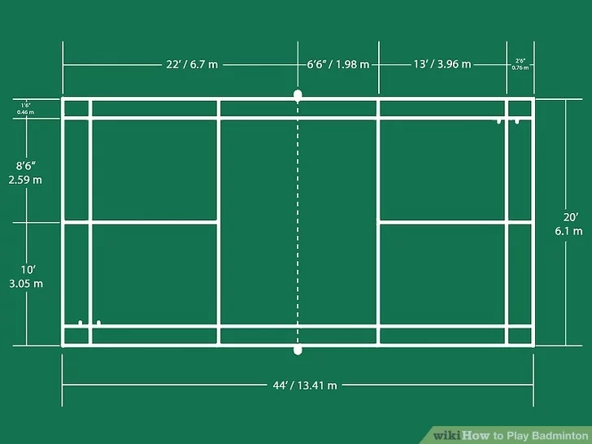
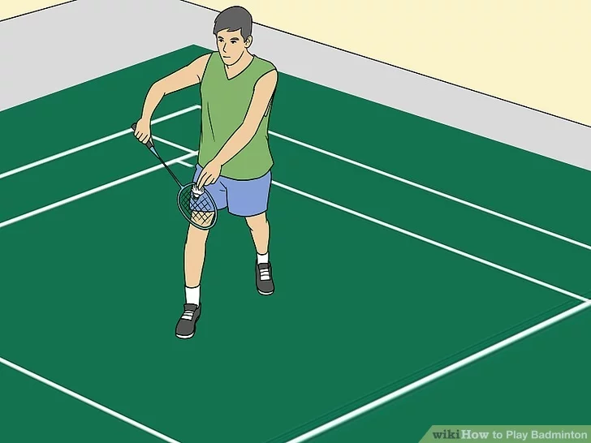
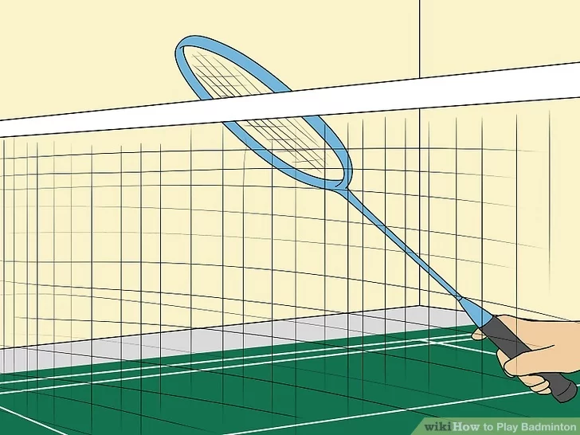
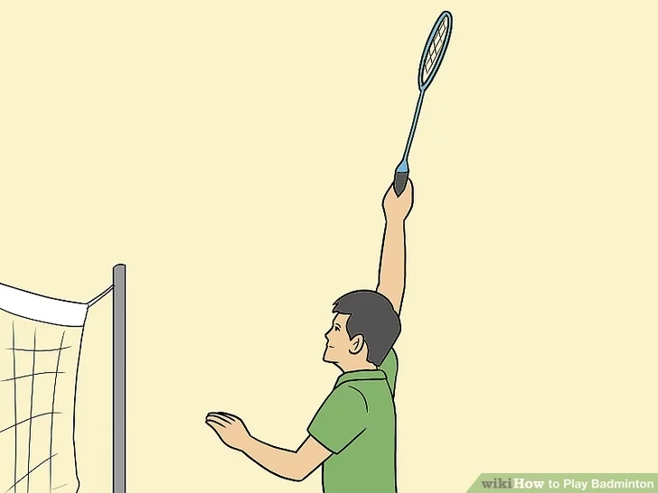

Who wouldn't want to play the world's fastest racket game? Badminton can be played with two or four players. The object of the game is to score points by successfully hitting the shuttlecock over the net. Though the game has some similarities to tennis, the rules of badminton are distinct and important to know before you take a swing at your first game. If you want to be a badminton master or just impress that cute girl at the park, then let's get started.
Download Instructions
For Saving Instructions Offline Click The Button Below
Badminton, like tennis, is a racket sport that is played by either two players or two teams of two players each. The object is for you or your team to get to 21 points first. You score a point whenever you successfully serve the shuttlecock and your opposing team commits a fault, which means that the team fails to appropriately return the shuttlecock.
To win each game, you must earn 21 points first, and win by two in the process. So, if both teams have a score of 20, one team must win by 22-20, and so on.
If you and your opponent cannot win by 2 and keep going until the score is 29-all, then the first team to score 30 points wins.
The first team to win two games wins the match. If the score is 1-1 in games, you must play a third deciding game.
2
Get familiar with the badminton court.

The badminton court is 44 feet (13.4 m) long by 20 feet (6.1 m) wide. If you're playing singles, you play on the part that is 44 feet (13.4 m) long but only 17 feet (5.2 m) wide. The net should be positioned halfway across the court, made of three-quarter inch mesh at the 20 foot (6.1 m) mark (17 feet (5.2 m) for singles), 5 feet (1.5 m) above the ground. When you're playing doubles, the extra 15 feet (1.5 m) on the left and right side of the court (the doubles sidelines) are considered fair game for serving and returning. Here's what else you need to know:[1]
Each side of the court has a right and left service court. The server of one team must serve from one service court to the service court diagonal from it. Players must change courts after each point has been scored.
When serving in singles, you can serve to the opponent's diagonal service box and the back singles line on that side of the course, but not to the wider doubles sideline.
When serving in doubles, the player can serve to the opposing team's diagonal service box, including the doubles sideline, but not the singles long service line.
So, for singles service, the receiving court is longer and narrow, and in doubles service, the court is wide and short.
After the shuttlecock is successfully served, each team's entire court becomes fair game. The shuttlecock just has to stay within the bounds of the doubles or singles court.
Players can score points once a player commits a fault. If a server forces the opponent to take a fault, a point will be given to the server. If the recipient forces a fault to the server (so the server can't play it), the recipient will receive the point as well as the recipient becoming the new server for the next play.
3
Understand the basics of play.

Here's what you need to know before you start your badminton game, beyond the court information and the scoring rules:
Toss a coin or have another contest to decide which team will be serving first and which side they will play on.
The first serve of a badminton game comes from the right half of the court to the court that is diagonally opposite that court. For the rest of the game, if you have an even number of points serve from the right, if you have an odd number of points, serve from the left.
If the serving side commits a fault, then the receiving side gets a point and the serve shifts to that side. If the serving team serves and the receiving side commits a fault, then the serving team moves from one service court to the other and continues to serve. There is a point scored after every serve (unlike in volleyball, for example).
In doubles, each team only has one "service." So, if one player on one team serves and faults, then the shuttle goes to a player on the other team, and so on.
When a receiving team wins a point and gets the serve, the team does not switch sides but serves from where they are standing. If they win the first service point, then the players switch positions from right to left.
After each game, opponents change ends of the court, and the side that won the previous game gets to serve at the start of the next game.
4
Understand how a player can get a fault.

There are several reasons that a team or player can earn a fault. Here they are:
When the shuttlecock is served, the shuttlecock must be hit to a point higher or at the server's waist - otherwise it's a fault. If any part of the racket at the point of striking wasn't higher than any part of the serving player's hand, a fault can be given.
If the serving team fails to serve the shuttlecock over the net. The shuttlecock must be hit only once by the same player is to be considered fair in badminton. In badminton, you only get one try on each serve. The only exception is if your team gets a let, which is when the shuttlecock hits the net and falls over into the opponent's court. In that case, you get another try.
If you hit the shuttlecock into or under the net at any point in the game.
If the shuttlecock hits you.
If you hit the shuttlecock out of bounds or passes around or under the net to the player on the other side. Shuttlecocks falling on the line can be deemed as fair-play.
If you hit the shuttlecock on the ground on your side of the court or had extended beyond the longest service line, these contribute to a fault.
If the server fails to serve the shuttlecock into the correct opposing court.
If any player attempts to (successful or unsuccessful) obstruct their opponent in any way, these contribute to a fault on that player.
li>The feet of any player must be completely within the service court at the time of play - otherwise a fault will be called.
If the player is able to touch the badminton net with any piece of equipment including their clothes or any body part, this contributes to faults.
Balks contribute to a badminton fault too.
5
Learn the basic ways to strike the shuttlecock.

The standard badminton racket is 26 inches (66.0 cm) long and weights anywhere from 4.5-5.5 ounces. Most of them are made with metal and nylon, and you'll need to generate enough energy to effectively strike the shuttlecock with this light racket. The main strokes are the forehand and the backhand (as in tennis) and you'll need a light, quick wrist to effectively strike the shuttle. Here's what you need to know about striking the shuttlecock:
It's all about the footwork. See the shuttle and use several small steps to position yourself so that you can easily strike it instead of having to stretch too much.
You'll need to practice the backswing, the forward swing and hit, and the follow through in order to hit the shuttle effectively. You should hit the shuttle's round center, not the feathers of the shuttle.
Perfect your clear shot. This is the most common shot and the goal is to strike the shuttle in a way that moves your opponent away from the net, which gives you time to set up your next shot.
Practice your drop shot. To hit this shot effectively, you'll have to hit a slow, gentle shot that makes the shuttle fall just over the net, making it hard to reach for your opponent, no matter how fast he runs.
Smash the shuttle. This is a powerful shot that you use to hit a shuttle that is above the height of the net. You'll need to raise you're racket behind your back, as if you were going to scratch it, anticipate the shuttle coming your way, and then hit it hard, diagonally down, as if you were smashing it over a fence.
Drive the shuttle. This can be a forehand or a backhand shot that makes the shuttle move parallel to the ground, just barely passing over the net, making it hard for your opponent to anticipate or return your shot.
Recognize that servers must be able to understand when his opponents looks ready to receive the stroke. The server must not serve when the opponent doesn't seem ready to receive.
Both players must be standing within the confines of the court with both feet stationary in contact with the ground until the server delivers the ball to their opponent. However, players must not stand on either of any of the lines painted on the ground - for these are considered to be outside of the service court's area.